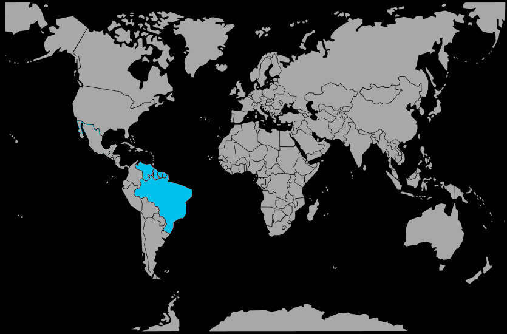

Systématique
- Ordre : Cyprinodontiformes
- Famille : Anablepidae
- Genre : Anableps
- Espèce : Anableps anableps
Anableps anableps est un poisson vivipare extraordinaire dont chaque œil est divisé horizontalement en deux lobes, lui permettant de voir simultanément au‑dessus et en dessous de la surface de l'eau.
Les femelles atteignent 18 à 24 cm, les mâles 14 à 15 cm, avec un corps allongé, cylindrique et brun, adapté à la vie en milieu saumâtre et inter‑tidal.
L'espèce est grégaire, vivant en groupes importants pouvant compter plusieurs centaines d'individus, qui se rassemblent dans les canaux principaux à marée basse et migrent vers les zones inondées à marée haute.
Elle se maintient constamment à la surface, scrutant l'environnement aérien pour détecter proies et prédateurs; en aquarium, elle nécessite un très grand volume avec une grande surface et un couvercle obligatoire.
Mode : vivipare; les mâles possèdent un gonopodium orienté à gauche ou à droite, et les femelles une ouverture génitale correspondante, ce qui nécessite un appariement directionnel.
La gestation dure plusieurs semaines, après quoi la femelle donne naissance à quelques jeunes déjà grands et complètement formés, capables de nager et de se nourrir immédiatement.
Dimorphisme sexuel : très marqué; les femelles sont nettement plus grandes et massives que les mâles, qui possèdent un gonopodium visible.
Espérance de vie : plusieurs années en captivité, dans un aquarium public ou un très grand aquaterrarium saumâtre bien entretenu.
Anableps anableps habite les zones inter‑tidales des mangroves à Rhizophora, où il évolue à la surface des canaux et des zones inondées lors des marées, se nourrissant d'insectes et de petits invertébrés.
Répartition
Origine naturelle :
- Côtes nord‑est de l'Amérique du Sud, du golfe de Paria (Venezuela/Trinidad‑et‑Tobago) jusqu'au Brésil.
- Guyane, Suriname, Guyane française, embouchure de l'Amazone et côtes jusqu'à l'estuaire du río Parnaíba (Maranhão/Piauí).
- Mangroves et zones estuariennes saumâtres soumises aux marées.
L'espèce est largement distribuée le long des côtes atlantiques tropicales d'Amérique du Sud, dans les forêts de mangroves et les zones inter‑tidales.
Paramètres de maintenance
Température : 24 à 28 °C.
pH : 7,0 à 8,5, eau neutre à alcaline.
Salinité : eau saumâtre, environ 5 à 15 g/L de sel marin, avec des variations selon les marées.
Courant : faible à modéré, avec une bonne oxygénation et un niveau d'eau permettant le comportement de surface.
Volume conseillé : au minimum 500 à 800 L pour un petit groupe, idéalement en aquarium public ou aquaterrarium avec grande surface.
Régime alimentaire
Régime : carnivore insectivore; il se nourrit principalement d'insectes tombés à la surface, de petits crustacés et d'invertébrés aquatiques.
En aquarium, il accepte les nourritures flottantes (granulés, insectes séchés, vers, crevettes), distribuées en surface pour reproduire son comportement naturel de chasse.
Des repas réguliers et variés, associés à une eau saumâtre de qualité et bien oxygénée, sont essentiels pour maintenir cette espèce spectaculaire mais exigeante.